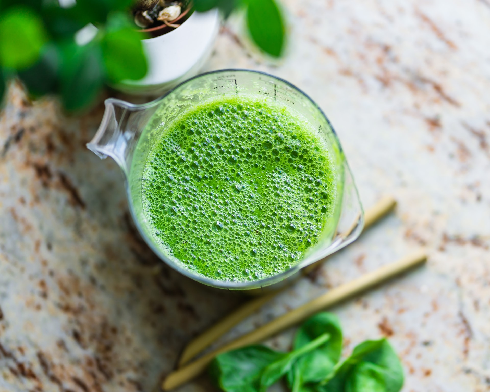

Green Smoothie Recipe

Description
A green smoothie can be a snack or a complete meal if you'd like. It depends what ingredients you add. There are a lot of different ways to make a green smoothie, but it'll surely be a healthy addition to your diet.
Ingredients
- Spinach
- Banana
- Strawberries
- Multifruit Juice
- Collar greens
Steps
- Wash all the vegetables and fruit
- Use a blender to blend it all up
- Pour into a glass or drink directly from the blender